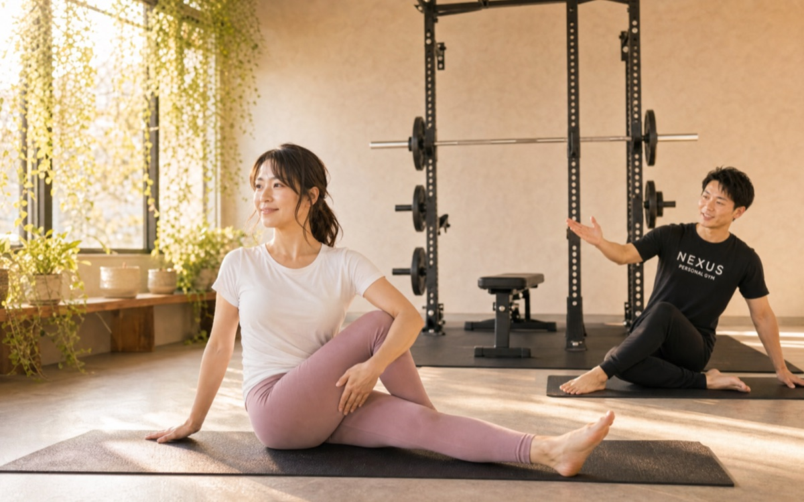
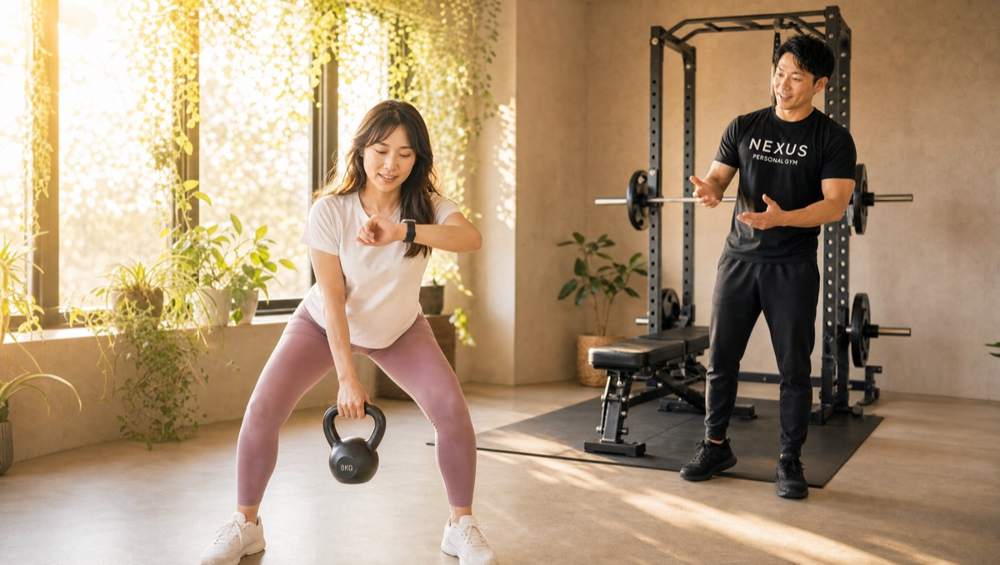
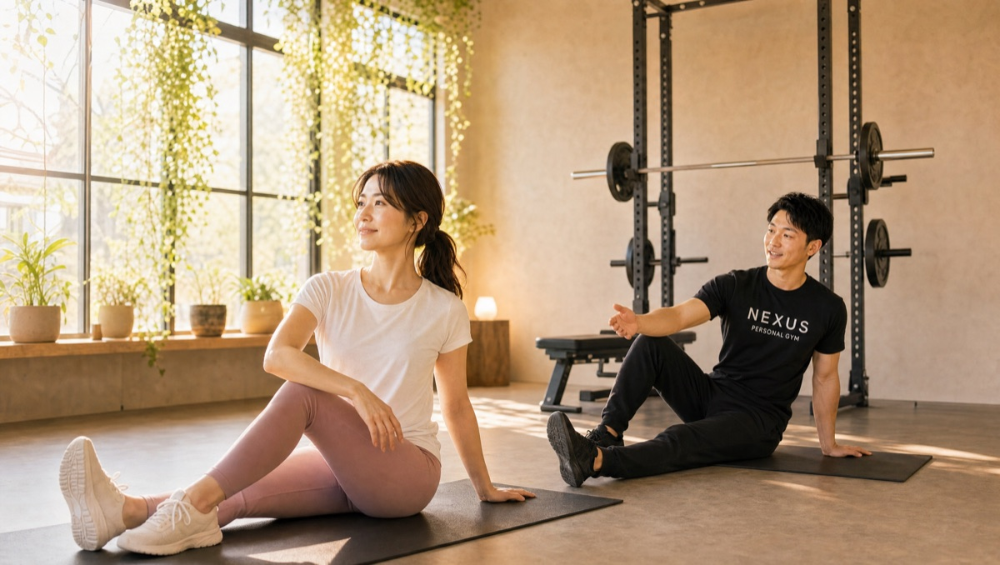
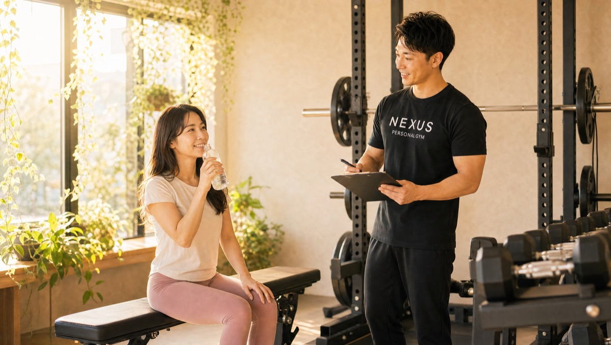

NEXUS Personal Gym ／ 東京都江東区
NEXUSパーソナルジム 清澄白河店｜清澄白河の完全個室・隠れ家ジム
半蔵門線・大江戸線 清澄白河駅すぐ。江東区清澄の完全個室パーソナルジムです。「管理栄養士 × 女性トレーナー、走る人の栄養拠点」を軸に、資格を持つトレーナーの食事指導と、隅田川テラスを走るランナーへのケア指導が支持され、Google口コミ★4.9（53件）をいただいています。
- 完全個室
- 管理栄養士在籍
- 清澄白河駅すぐ
- 手ぶら通いOK
- AI食事指導

この店舗の特徴
NEXUS清澄白河店は、東京メトロ半蔵門線・都営大江戸線 清澄白河駅からすぐの完全個室パーソナルジム。江東区清澄の落ち着いた立地にあり、カフェとアートの街として知られるこのエリアで、「食事から本気で身体を変えたい」という方に選ばれています。最大の特徴は、管理栄養士の資格を持つトレーナーが在籍していること。運動だけでなく、栄養の面からも結果を後押しします。ウェア・タオル・プロテインまで無料提供の手ぶら通いOKで、仕事帰りや外出のついでにバッグひとつで立ち寄れます。料金は1回4,500円〜（ライトコース30分・月4回18,000円）から始められます。
栄養のプロが隣にいるジム
清澄白河店の一番の強みは、栄養のプロがすぐ隣にいることです。口コミでも「トレーナーが管理栄養士でもあり、食事アドバイスが圧倒的に丁寧」「サプリや栄養素の知識まで学べた」という声をいただいています。身体を変える成果の大部分は、ジムの外の食事で決まるもの。だからこそ清澄白河店では、写真を送るだけのAI食事指導（月額3,000円・税込）に加え、対面で管理栄養士トレーナーに直接相談できる二段構えを用意しています。何を・いつ・どれだけ食べるか、あなたの生活に合わせて具体的に設計します。
管理栄養士でもあるトレーナーの食事やサプリのアドバイスが圧倒的に丁寧で、これまで知らなかった栄養知識まで学べました。
走る人のための補強トレーニング

清澄白河は、隅田川テラスや清澄庭園といったランニングコースに恵まれた街。清澄白河店は、そんな走る人のための「補強とケアの拠点」として使われています。口コミには「元ランナーのトレーナーに、ラン後のケアまで教わった」という声も。走力を支えるのは、体幹・臀部・ハムストリングスなど走りでは鍛えにくい部位の補強です。ケトルベルなどを使ったトレーニングでフォームを安定させ、故障を防ぎ、タイム改善につなげます。「走ってはいるのに記録が伸びない」「膝や腰に不安がある」というランナーの方こそ、一度ご相談ください。
ラン後のケアまで教われる

トレーニングと同じくらい大切なのが、走ったあとのケアです。清澄白河店では、自宅でできるセルフケアやストレッチの方法まで指導します。硬くなりがちな股関節やふくらはぎ、走行後に張りやすい部位をどうほぐすか——プロの手順を覚えれば、翌日に疲れを持ち越しにくくなり、走る習慣そのものが軽やかになります。週1回のパーソナルで身体を整え、残りの日は自分で走る。そんな「トレーニングとランを両立する設計」で、無理なく走り続けられる身体をつくります。
毎日掃除の行き届いた完全個室

気持ちよくトレーニングに集中していただくために、清澄白河店では毎日の清掃を徹底しています。口コミでも「毎日掃除しているのが分かる清潔さ」という声をいただいています。完全個室だから、他人の目を気にせず自分のペースで。着替えスペースやトレーニング機器はもちろん、細部まで手入れの行き届いたプライベート空間で、運動が苦手な方も安心して通えます。清潔で静かな環境は、続けるための土台です。
女性トレーナー在籍
清澄白河店には、NEXUSのなかでも希少な女性トレーナーが在籍しています。「同性の方が身体の悩みを相談しやすい」「ボディメイクの目標を話しやすい」という声は多く、女性トレーナーの在籍店であることは、この店舗を選ぶ理由のひとつになっています。ご希望に応じて女性トレーナーでのご案内が可能です（シフトにより変動しますので、ご予約時にご相談ください）。もちろん、性別を問わず全トレーナーが3ヶ月の自社教育を修了した実力派。まずは無料体験で、担当の雰囲気を確かめてみてください。
まずは無料体験から
「食事から本気で変えたい」「走りながら身体を整えたい」「女性トレーナーに相談したい」——どんな入口でも、まずは無料体験でお話を聞かせてください。カウンセリングで目標・食生活・運動歴をうかがったうえで、実際のトレーニングまで体験できます。当日入会で入会金が通常55,000円→15,000円（税込）に割引。無理な勧誘は一切ありません。半蔵門線・大江戸線 清澄白河駅すぐなので、まずは話だけでも気軽に来てください。
料金プラン
入会金は通常55,000円、無料体験当日入会で15,000円（税込）に割引。AI食事指導は月額3,000円（税込）。全店舗共通の料金です。
アクセス
- 店舗名
- NEXUSパーソナルジム 清澄白河店
- 住所
- 〒135-0024
東京都江東区清澄2-13-2 ニューディレクトレジデンス清澄203 - 最寄り駅
- 東京メトロ半蔵門線・都営大江戸線 清澄白河駅
- 営業時間
- 毎日 8:00〜23:00
- 電話番号
- 050-1790-8488
Google口コミ★4.9（53件）
NEXUS清澄白河店はGoogle口コミ★4.9・53件。管理栄養士資格を持つトレーナーの食事指導と、ランナーへのケア指導が評価されています。
※お客様の声はGoogle口コミの内容を要約して掲載しています。出典：Google マップ
減量目的で始めましたが、続けるうちに筋力がついて、日常生活でも疲れにくくなりました。
毎日掃除しているのが分かる清潔な空間で、運動が苦手な私でも親身な指導のおかげで続けられています。
清澄白河店のよくある質問
Q清澄白河で食事指導が本格的なパーソナルジムはありますか？+
Qランニングと並行してパーソナルは受けられますか？+
Q女性トレーナーを指名できますか？+
よくある質問（全店共通）
料金・制度などNEXUS全店に共通するご質問です。さらに詳しくは110問のFAQをご覧ください。
Q料金はいくらですか？+
Q手ぶらで通えますか？+
Qキャンセルはいつまでできますか？+
Q食事指導はありますか？+
Qトレーナーはどんな人ですか？+
NEXUSパーソナルジム公式サイトを見る